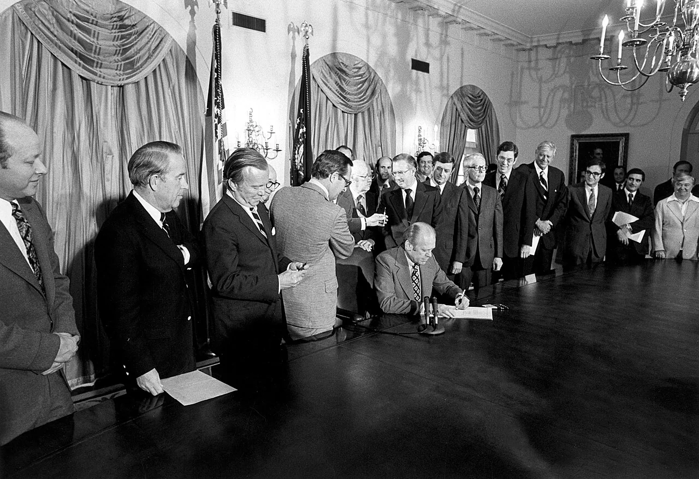
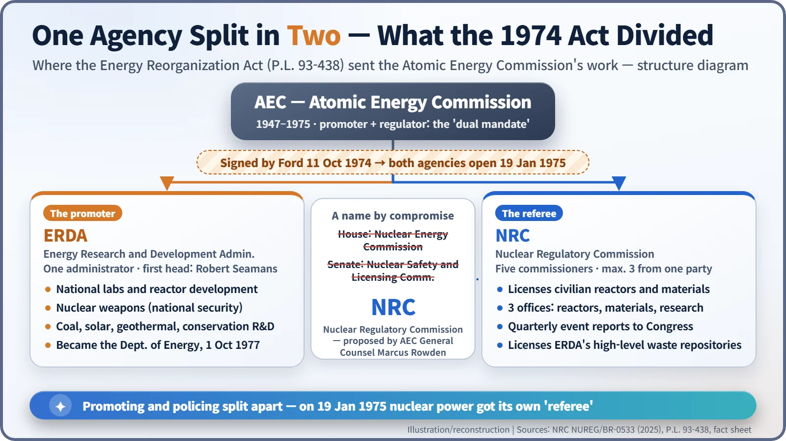
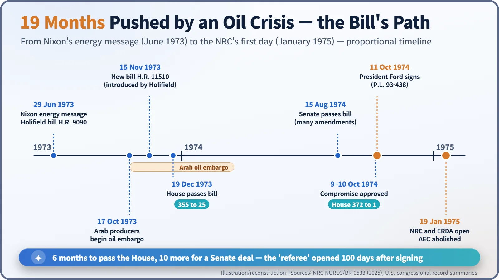
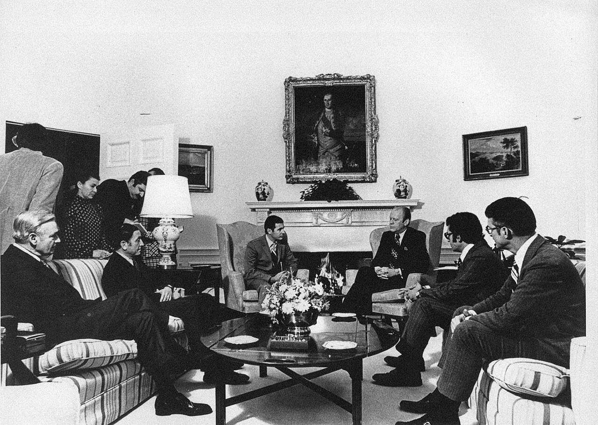

Nuclear History · 236
A Referee With No Pompoms — The Energy Reorganization Act of 1974 and the Birth of the NRC
An Apollo 8 astronaut, a 355-to-25 House vote, a name nobody first proposed, and the day nuclear power got a separate referee.
For two decades the U.S. Atomic Energy Commission both promoted nuclear power and policed its safety. Pushed by mounting criticism and then by the 1973 oil crisis, Congress passed the Energy Reorganization Act, signed on 11 October 1974, which gave research and promotion to a new Energy Research and Development Administration and safety regulation to an independent Nuclear Regulatory Commission. The NRC opened on 19 January 1975 under a former Apollo astronaut who promised to be a referee, not a cheerleader.
"No pompoms in our hands"
On Christmas Eve 1968, as Apollo 8 swung around the Moon, a blue Earth rose over the grey lunar horizon. The astronaut who caught that moment on film, the photograph now known as "Earthrise," was William A. Anders (1933–2024). Six years later he took a very different seat: first chairman of the U.S. Nuclear Regulatory Commission (NRC). Around the time the new agency opened, he summed up its job in one line: "Our job is to develop credibility. We're the referee, there'll be no pompoms in our hands." [1] [4]
Why would a referee need to announce that he was not a cheerleader? That question holds the whole story.
Pompoms in one hand, a whistle in the other
The Atomic Energy Act of 1954 gave the Atomic Energy Commission (AEC) two jobs at once: grow the civilian nuclear industry, and make sure that industry was safe. A recent NRC history calls this a conflicted "dual mandate." [1] [2]
By the late 1960s the potential conflict had become real. Critics accused the AEC of playing down worrying research on emergency core cooling systems (ECCS) from its own national laboratories. In July 1971, in the Calvert Cliffs case, a federal appeals court tore into the agency's narrow reading of the new environmental law, writing that "the Commission's crabbed interpretation of NEPA makes a mockery of the Act." The time needed to license a plant doubled. Opponents said safety came second; industry said licensing was far too slow. [1]
An oil crisis forces the issue
The push came from outside nuclear power. On 29 June 1973 President Richard Nixon's energy message proposed splitting the AEC into an energy research agency and an independent regulator. Then on 17 October Arab oil producers began an embargo. Oil prices doubled and then quadrupled, and petrol queues spread across the country. [1]
On 15 November 1973 Chet Holifield (1903–1995), chairman of the House Government Operations Committee, introduced a new bill, H.R. 11510. The House passed it on 19 December by 355 votes to 25. The Senate was another matter. Under Abraham Ribicoff, a nuclear sceptic who chaired the Senate committee, the bill picked up amendments such as federal money for groups contesting licences, until a trade newsletter complained it had been "Christmas Treed." [1]
Holifield won the final House–Senate conference. He boasted that the result was "95% the House bill"; Ribicoff admitted, "We are an unhappy group of Senate conferees." Even the name was a compromise. The House wanted a "Nuclear Energy Commission," the Senate a "Nuclear Safety and Licensing Commission." The AEC's general counsel, Marcus A. Rowden, suggested the middle way: Nuclear Regulatory Commission. [1]

President Gerald R. Ford (1913–2006), in office for barely two months, signed the Energy Reorganization Act on 11 October 1974 (Public Law 93-438). When a reporter asked the last AEC chair, Dixy Lee Ray (1914–1994), how it felt to have "a $1 billion agency just disappear from under you," she corrected him: "It's $4 billion, sir." The AEC, she said, was not disappearing so much as merging into a much broader energy agency. [1] [3]
Who got what

The promoting side went to the Energy Research and Development Administration (ERDA): the national laboratories, reactor development, nuclear weapons, and coal, solar and geothermal research gathered from other departments. ERDA became part of the new Department of Energy on 1 October 1977. [1]
The watching side went to the NRC. The law gave it five commissioners, no more than three from one party; three offices for reactor regulation, nuclear material safety and safeguards, and regulatory research; quarterly reports to Congress on abnormal events; and a channel for office directors to take safety worries straight to the commissioners. Holifield's draft would simply have carried the AEC commissioners over, but budget officials objected that this trespassed on the president's power of appointment, so the NRC started with a fresh slate. [1]

19 January 1975: a whistle and nothing else
One hundred days after the signing, on 19 January 1975, the NRC and ERDA opened their doors and the AEC ceased to exist. Regulatory staff had grown from a few hundred in the mid-1960s to more than 2,000. The chairman was Anders, the only AEC commissioner to move across. [1] [2]

Scepticism ran high. The AEC's regulatory staff had moved over en masse and the rules were unchanged, so some critics dismissed the whole thing as a change of letterhead. Two months later a fire broke out at the Browns Ferry nuclear plant in Alabama. Anders answered with a joke: "I've had Ralph Nader chewing on one arm today and the industry chewing on the other. I guess that means we're impartial." [1]
Two common misunderstandings
First, the well-known protection for nuclear whistleblowers was not in the 1974 Act. It was added by a 1978 amendment as Section 210 and renumbered Section 211 in 1992. [5]
Second, the end of the AEC was not simply a victory for anti-nuclear campaigners. The oil crisis, industry's wish for faster and more credible licensing, and critics' demands for fairness all pointed in the same direction at once. Industry lawyers and anti-nuclear activists alike said they welcomed the new commission. [1]